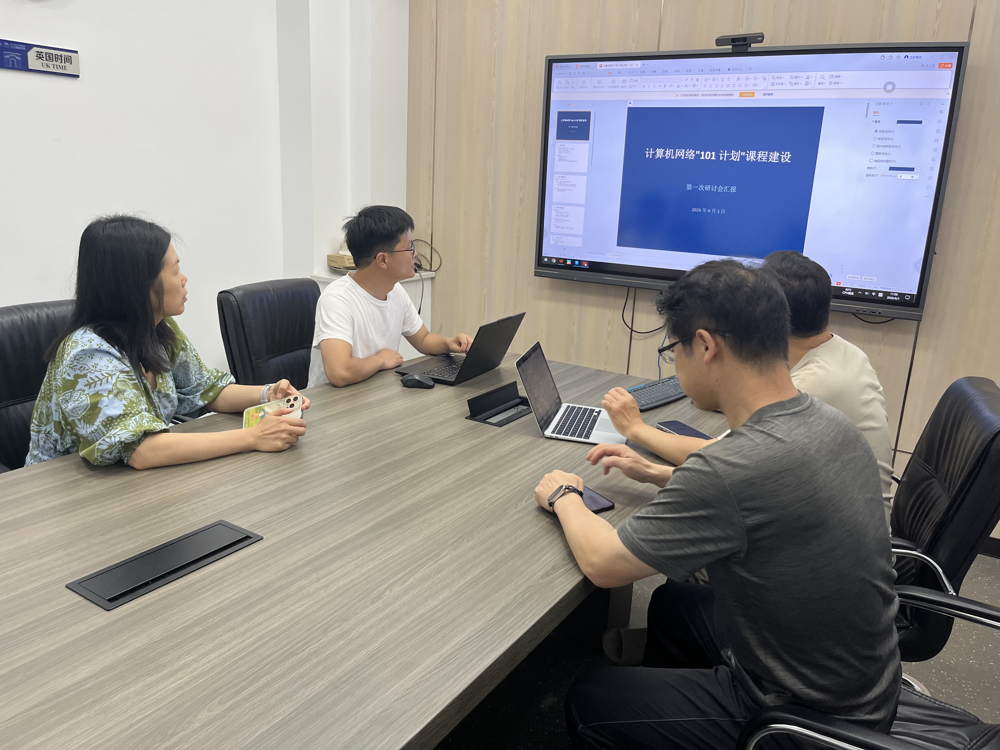
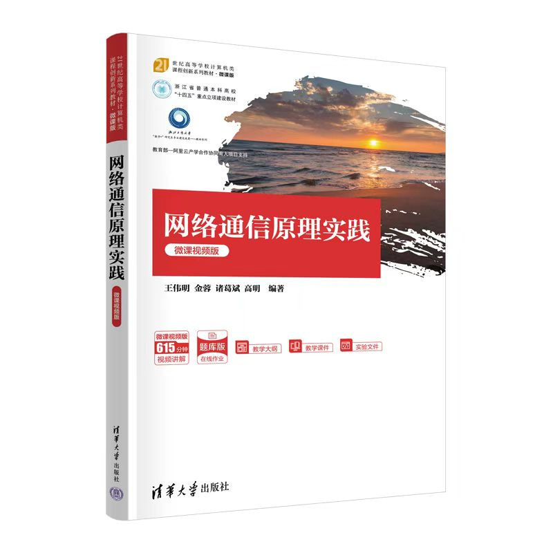

📚 浙江省"101 计划"课程建设
计算机网络：AI 原生教学范式的探索与实践
导读：当传统课程遇上 AI 革命，会发生什么？浙江工商大学计算机网络课程团队给出了答案——不是简单的技术叠加，而是一场从"知识灌输"到"AI 应用实践"的范式重构。
01课程团队：一支"老中青"结合的战斗队伍

图：第一次研讨会现场，团队成员正在讨论课程建设方案
2026 年 6 月 1 日，浙江工商大学计算机网络"101 计划"课程建设团队召开了第一次研讨会。这支由诸葛斌教授领衔的团队，成员包括金蓉（副教授）、高明（副教授/系主任）、李传煌（教授/部长）、蒋献（实验师），是一支"老中青"结合、理论与实践并重的战斗队伍。
🎯 诸葛斌
课程负责人，统筹全局
金蓉
实验课程负责人，省级线上一流课程主讲人
📖 高明
教材编写牵头人
🤝 李传煌
校企合作联络人
️ 蒋献
教学资源开发与技术支撑
02现有成果：厚积薄发的坚实底座
📚 理论课程：中国大学 MOOC
《高级网络通信原理实践》
- 平台：中国大学 MOOC
- 学习人数：228 人（本期）
- 课程进度：第 14 周/共 18 周
- 课程结构：十三章（1-8 章园区网络，9-13 章网络虚拟化）
- 特色：与阿里云计算有限公司合作建立云实验室平台
🔬 实验课程：省级线上一流课程
《计算机网络实验》
- 平台：浙江省高等学校在线开放课程共享平台
- 标签：省级线上一流课程
- 负责人：金蓉
- 运行期次：7 期
- 累计选课：623 人次
- 覆盖高校：22 所
- 累计访问：593,924 次
💡 亮点：一门实验课程，59 万次访问，覆盖 22 所高校，这是怎样的影响力？
📖 教材建设：清华出版社重磅出品

《网络通信原理实践（微课视频版）》教材封面
《网络通信原理实践（微课视频版）》
- 出版社：清华大学出版社
- 作者：王伟明、金蓉、诸葛斌、高明
- 出版时间：2024 年 9 月
- 特色：微课视频版，615 分钟视频讲解
- 系列：21 世纪高等学校计算机类课程创新系列教材
《系统级编程及分布式应用实现技术》
- 出版社：清华大学出版社
- 作者：李传煌、金蓉、姜国新、时磊、马博、诸葛斌
- 状态：已定稿，预计 2026 年初出版
03101 计划：一场教育范式的革命
"课程不再是教学核心，而是 AI 工具应用的背景场景。"
—— 诸葛斌
这不是简单的技术升级，而是一场从"知识灌输"到"AI 应用实践"的范式重构。
📊 传统模式 vs AI 原生模式
| 维度 |
传统模式 |
AI 原生模式 |
| 教学目标 |
知识传授 |
AI 应用能力培养 |
| 学生角色 |
被动接受者 |
主动创造者 |
| 教师角色 |
内容传授者 |
引导者与质量把关者 |
| 作业形式 |
书面答题 |
AI 生成可视化内容 |
| 评价标准 |
完成度 |
生成质量与理解深度 |
🎯 五大改革举措
1️⃣ 协议机制可视化
- 利用 Manus 等 AI 工具生成动态动画
- 涵盖 STP、路由查找、CHAP、ACL、NAT、TCP 三次握手、OpenFlow 等核心协议
- 学生主导：学生使用 AI 生成，教师筛选最优作品
2️⃣ 课程专属私有知识库机器人
- 整合教材、课件、习题、FAQ
- 提供个性化辅导
- 24 小时在线答疑
3️⃣ 全流程智慧教学管理
- MOOC 慕课堂 + 钉钉 AI 助理
- 课前 - 课中 - 课后全流程覆盖
- 数据驱动的教学改进
4️⃣ 智能体辅助实验新范式
- AI 辅助生成命令 + 人工专业排错 + 真实设备部署
- 保留真实交互逻辑，AI 辅助概念理解
- 关键原则：AI 不替代实验操作，而是辅助理解
5️⃣ 智能体驱动的课程门户建设
- 课程官网
- 教学资源 + 实验案例 + 优秀作品 + 智能互动
- 媒体化表达，超越传统 PPT 和教材
04创新实践：学生作业即课程资源
SDP 课程实践经验
核心方法：将知识点拆解为学生作业任务，按效果筛选最佳方案
操作流程：
- 知识点拆解：将课程知识点拆解为学生作业任务
- 学生实践：学生使用 AI 工具生成可视化内容（动画、讲解等）
- 效果筛选：按效果优劣筛选最佳实现方案
- 资源库建设：形成可复用的知识点资源库
关键原则：每知识点选三个最优作品，资源建设须面向推广复用
期末汇报 AI 化
本学期期末汇报 PPT 交由 AI 自动生成课程总结
- 提升效率与呈现质量
- 体现 AI 原生课程管理思路
- 教师从内容制作中解放，聚焦质量把关
05建设目标：可复制、可推广的"AI+ 教育"典型案例
📅 时间节点
| 时间 |
里程碑 |
交付物 |
| 2026.06 |
知识体系初稿 |
50-60 个关键知识点文档 |
| 2026.07 |
教材样章 + 实验案例 |
样章 2 章 + 实验案例 5 个 |
| 2026.08 |
协议动画 + 知识库机器人 |
动画 5 个 + 机器人 MVP |
| 2026.09 |
全部交付物初稿 |
初稿汇总 |
| 2026.10 |
中期总结材料 |
总结报告 |
| 2026.11-12 |
中期工作总结 |
质量标准制定 |
| 2027.12 |
验收认定 |
核心课程 + 教材 + 实践项目 + 师资团队 |
🎯 预期成效
- ✅ 形成协议动画库 + 课程专属私有知识库机器人
- ✅ 更新出版配套数智化教材
- ✅ 实验效率提升40%+，每学期受益200+学生
- ✅ 打造"101 计划"本地化"AI+ 教育"典型案例
- ✅ 可复制、可推广：形成系统化、高质量的课程资源库
06未来展望：五年后专业教育将全面重构
"未来五年内传统专业与课程可能消亡，教育核心应转向培养学生对 AI 生成内容的判断力与批判性思维。"
—— 诸葛斌
这不是危言耸听，而是正在发生的现实。
当 AI 可以生成高质量的动画、讲解、代码时，传统的"知识传授"还有多少价值？当学生可以用 AI 工具完成作业时，教师的角色应该如何转变？
答案很明确：
- 教师从"内容传授者"转变为"AI 应用的引导者与质量把关者"
- 学生从"被动接受者"转变为"主动创造者"
- 教育从"知识灌输"转变为"判断力与批判性思维培养"
"教师需先相信 AI 的潜力，才能调整教学策略；是否能实现不重要，重要的是是否愿意探索与验证。"
07团队心声：一场教育实验的开始
诸葛斌：
"我们不是在做一个普通的课程建设项目，而是在探索未来教育的可能性。五年后，当我们的学生走上工作岗位，他们需要的是什么？不是死记硬背的知识，而是运用 AI 工具解决复杂问题的能力。"
金蓉：
"实验课程运行 7 期，59 万次访问，22 所高校使用。这让我们看到了优质教学资源的价值。现在，我们要做的不仅是延续，更是升级——用 AI 赋能，让实验课程更加智能化、个性化。"
高明：
"教材编写不是简单的知识堆砌，而是要思考：在 AI 时代，学生需要什么样的教材？我们的答案是：数智化教材，配套视频、动画、交互资源，让学生可以'活学活用'。"
08结语：信念先行，探索不止
这不是终点，而是起点。
计算机网络"101 计划"课程建设团队，正站在教育变革的潮头。他们相信：
- 信念先行：先相信 AI 的潜力，才能调整教学策略
- 学生驱动：以学生作业创新为驱动，构建课程建设素材库
- 媒体化表达：展示效果需超越传统 PPT 和教材
- 面向推广：资源建设须避免杂糅堆砌，形成系统化资源库
五年后，当我们回望今天，或许会发现：这场教育范式的重构，正是从这一刻开始的。